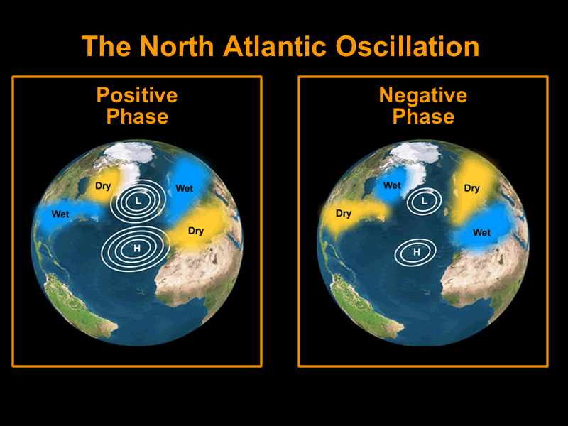

Figure 1
Changes in air pressure during strong (positive) and weak (negative) phases of the North Atlantic Oscillation.
Explaining the NAO
The NAO is a climate phenomena caused by changes in permanent regions of high and low air pressure over the North Atlantic.- The high pressure region is located over Portugal and the low pressure region is over Iceland.
- But what is air pressure? Air pressure is defined as the weight of air on the Earth’s surface. In this case, it is the weight of air over Portugal and Iceland.
- Some years have a strong or positive NAO and others a weak or negative one. A positive NAO phase is when there is a big difference between the high and low pressure regions (as seen in Figure 1). Consequently, a negative phase means there is a small difference between the high and low pressures.
How does the NAO impact climate?
Strong and weak NAO patterns lead to differences in climate across the North Atlantic particularly in the winter.- In the negative phase, the Mediterranean and Northern African have wetter and milder winters because the winds blowing towards the west from the tropics bring warm water and moisture to this region. Europe and North America, in contrast, are colder and drier during the winter.
- During the positive phase, the winds get stronger and shift towards Europe. Winters here and in North America are colder and wetter while winters in the Mediterranean and Northern Africa are milder and drier
We are studying the NAO’s impact on the ocean because...
- The NAO can influence surface ocean circulation and temperature through its impact on atmospheric circulation.
- Human emissions of greenhouse gases drive climate change by confining more heat energy from the Sun. The ocean traps more than 90% of this heat. This results in an increase of sea temperature and sea levels. The change in ocean temperature can alter life around us. For example, warmer ocean waters result in stronger tropical storms which damage property and cause loss of lives. Climate change can also affect natural climate phenomena that influence the ocean like the NAO but these impacts are not well-understood.